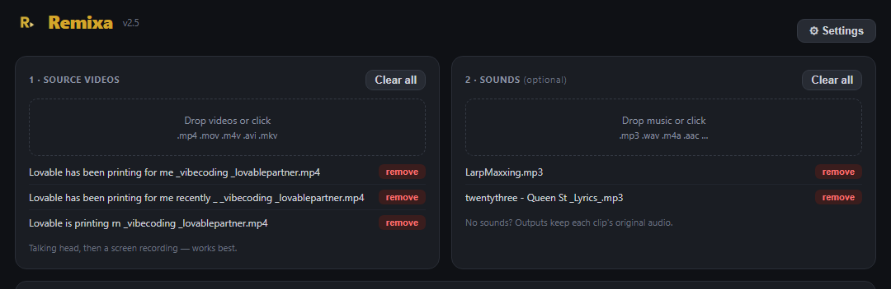
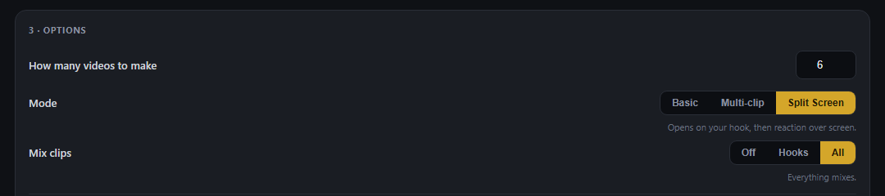
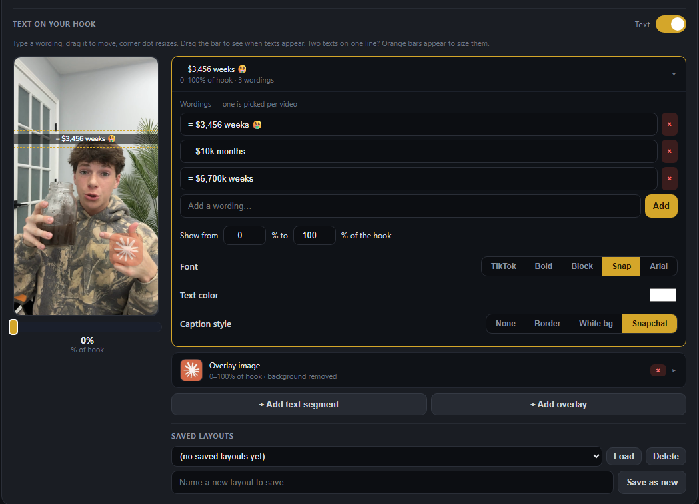
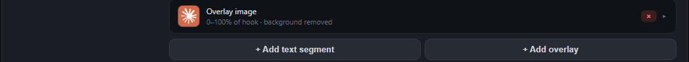
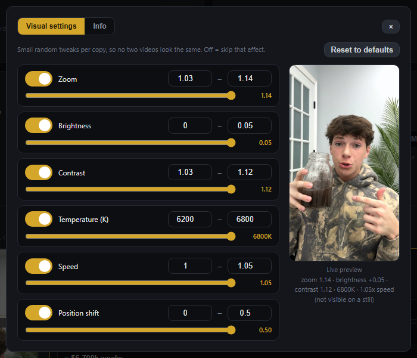
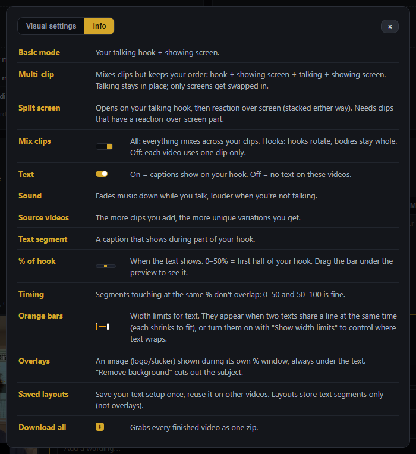
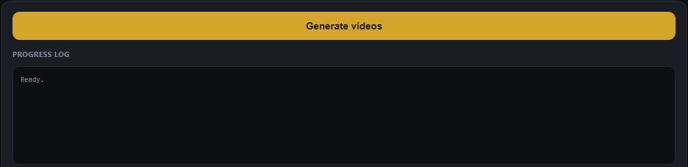
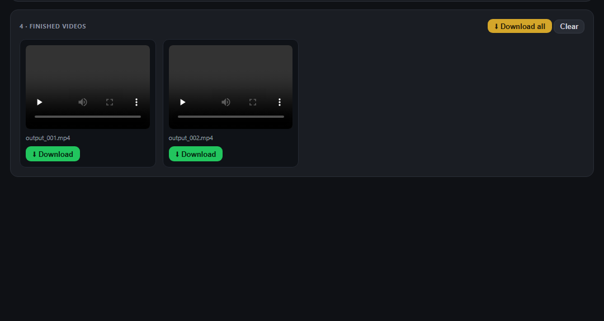

Everything you need to go from download to your first batch of finished videos. Remixa runs on your computer — your clips never leave your machine.
Download & install
Your download link is in your purchase email, and always available at remixa.app. Pick your platform:
Windows
- Download Remixa-Setup.exe from your purchase email or remixa.app.
- Double-click the installer and click through — it installs just for your user account, no admin password needed.
- Launch Remixa from the Start menu. The app opens in your web browser — that's normal, everything still runs locally on your PC.
Mac
- Download the .dmg from your purchase email or remixa.app.
- Open it and drag Remixa into Applications.
- Launch it — the app opens in your web browser, running locally.
Activate your license
The first screen asks for your license key — it's in your purchase receipt email. Paste it and hit Activate.

- One key works on up to 2 devices at the same time.
- An internet connection is needed to verify the key. After that, Remixa re-checks it periodically in the background.
- Switching computers? Deactivate on the old device first (or contact support to reset your activations).
Add your clips
Drop your source videos into 1 · Source videos. The ideal clip is a talking hook followed by a screen recording — you on camera saying the hook, then the screen/content you're showing. Remixa detects where the talking ends and the screen part begins automatically.
Sounds are optional: drop music into 2 · Sounds and Remixa fades it down while you talk and brings it up when you're not talking. No sounds means each output keeps its clip's original audio.

Pick a mode
Choose how many videos to make, then pick a Mode. Each mode shows a one-line hint under the buttons so you always know what it does.

| Basic | Your clip as-is — talking hook, then showing screen. The simplest mode and a great default. |
|---|---|
| Multi-clip | Mixes material across your clips but keeps your order: hook + showing screen + talking + showing screen. Talking parts stay in place; only the screen parts get swapped in. |
| Split Screen | Opens on your talking hook, then switches to a reaction-over-screen split. Needs clips that actually have a reaction-over-screen part. |
What each mode looks like
Real outputs rendered by Remixa (tap to play, sound on):
Mix clips
The Mix clips selector controls how much your clips cross over into each other's videos:
| Off | Each video uses one clip only. Cleanest, least variety. |
|---|---|
| Hooks | Hooks rotate across clips, bodies stay whole. Fresh openers on familiar content. |
| All | Everything mixes across all your clips. Maximum variety per batch. |
Text on your hook
Flip the Text toggle on and you get a live editor on a real frame of your video. Type a wording, drag the box to move it, and use the corner dot to resize.

How segments work
- Segments — each segment is one caption that shows during part of your hook. Add more with + Add text segment.
- Timing — “Show from X% to Y% of the hook” controls when it appears. Drag the bar under the preview to scrub through the hook and see exactly when each text shows. Segments touching at the same % don't overlap: 0–50 and 50–100 is fine.
- Wordings — add several wordings to one segment and Remixa picks one per video. With multiple segments, wordings mix-and-match across the batch, so every output can read differently.
- Styles — five fonts (TikTok, Bold, Block, Snap, Arial), any text color, and caption styles: None, Border, White bg, and a Snapchat-style bar.
- Orange bars — width limits. They appear when two texts share a line at the same time (each shrinks to fit), or turn them on manually to control where text wraps.
- Saved layouts — save your text setup once and reuse it on other videos.
The Snapchat style on a real output
Two text segments, both with the Snapchat caption style — one placed at the top of the frame, one at the bottom:
Image overlays
Overlays put an image — a logo, sticker or screenshot — on your hook, with the same timing controls as text. Click + Add overlay, upload an image, then drag and resize it right on the preview. Text always renders above overlays.

Remove background cuts the subject out of the image automatically, so a photo becomes a clean sticker. The first time you use it, Remixa downloads the background-removal model — that one-time download takes a moment, after that it's instant.
An overlay on a real output
Auto-variation & settings
Open ⚙ Settings (top right). The Visual settings tab controls auto-variation: small random tweaks — zoom, brightness, contrast, color temperature, speed, position shift — applied per copy so no two videos look the same. Every effect has a toggle and a range, with a live preview showing the strongest end of your ranges. “Reset to defaults” puts everything back.

The Info tab is a built-in cheat sheet: every mode, toggle and editor concept explained in one place, so you never have to leave the app to look something up.

Generate & download
Hit Generate videos. The progress log shows each video as it renders — you can watch it work through the batch.

Finished videos appear at the bottom with a player for each — preview them right there, download the ones you like, or grab the whole batch with ⬇ Download all (one zip).

Tips
- More clips = more variety. Multi-clip and Mix have more material to work with, so every extra source clip multiplies how different your outputs can be.
- Split Screen needs the right footage — clips that have a reaction-over-screen part. If your clips are plain talking + screen, use Basic or Multi-clip instead.
- Tutorials and demos work great in Basic and Multi-clip — the talking stays in your order, so the walkthrough still makes sense while the visuals vary.
- Give one segment several wordings instead of making several near-identical segments — Remixa picks a different one per video for free variety.
- Scrub the bar under the preview before generating — it's the fastest way to sanity-check your text timing.